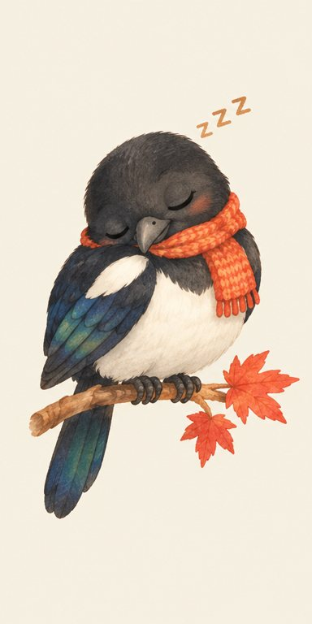

오늘 나들이
안녕하세요! 나들이 친구 까치예요.오늘 어디로 나들이 가 볼까요?

톡 눌러서 깨워 주세요.깨우면 오늘 나들이를 같이 찾아요.
말로 물어보면 가까운 나들이를 찾아드려요
맞는지 확인해 주세요. 고칠 곳은 수정하기를 눌러요.
지도를 불러오지 못했어요. 아래 목록은 그대로 볼 수 있어요.
날짜나 시간, 보고 싶은 것을 바꿔서 다시 찾아볼까요?
저장은 다음 단계(체험용 로그인)에서 연결해요.
저장한 장소·코스와 관심사는 여기에 모여요.